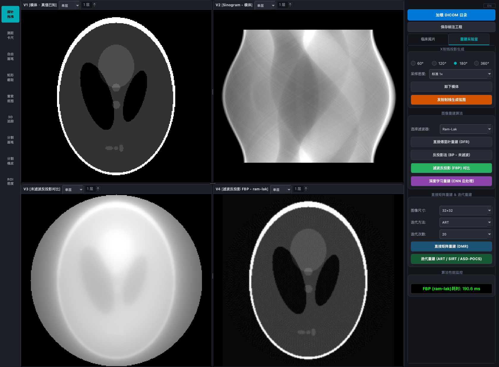

真实软件界面 · 点击查看原图
三维图像分割与重建工作站
PySide6 · NumPy · ONNX Runtime · CT Reconstruction
集成三维图像处理与重建算法的桌面工作站。开发 DICOM 加载、MPR、分割与 ROI 定量功能，加入空间几何校验和工程保存／恢复，并修正分割预处理中缺失的 spacing 重采样。
实现与验证说明
连接三维图像处理、重建实验与交互操作的桌面工作站。实现 DICOM 加载、三平面 MPR、多器官分割、ROI 定量与工程保存／恢复；校验序列身份和空间几何，防止蒙版错位与失效缓存复用。
实现直接傅里叶与多种迭代 CT 重建算法，结合残差 U-Net 开展稀疏视角实验。分割预处理中补齐训练所需的 spacing 重采样，在历史版本同源公开数据 20 例配对对照中，平均 Dice 从 0.684 提升至 0.840。